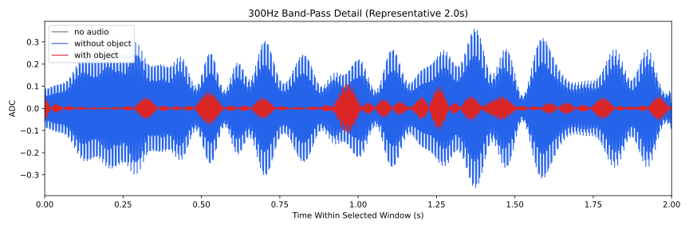
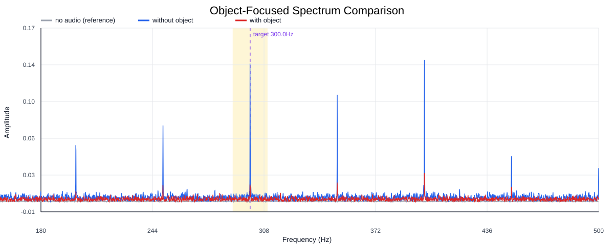
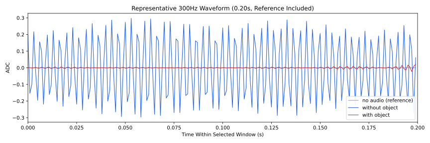
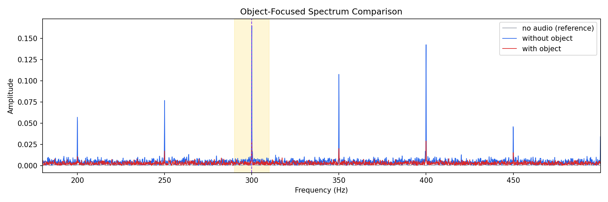
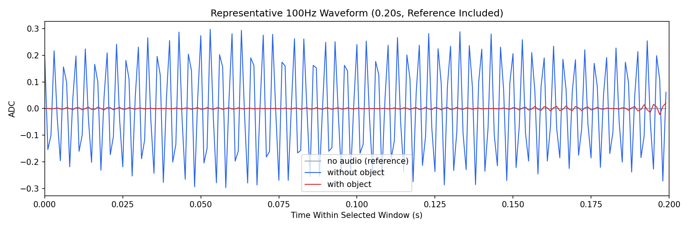

Background: F:\项目类文件夹\异物检测4.10\Data_Dual\frequency_sweep\0300Hz\repeat_01\raw\no_audio.csv
Without object: F:\项目类文件夹\异物检测4.10\Data_Dual\frequency_sweep\0300Hz\repeat_01\raw\without_object.csv
With object: F:\项目类文件夹\异物检测4.10\Data_Dual\frequency_sweep\0300Hz\repeat_01\raw\with_object.csv
| Metric | 无音频 | 100Hz无异物 | 100Hz有异物 | 无异物/无音频 | 有异物/无异物 | 有异物/无音频 |
|---|---|---|---|---|---|---|
| centered_rms | 0.026055 | 0.302348 | 1.006727 | 11.6040 | 3.3297 | 38.6379 |
| raw_target_amp | 0.000336 | 0.138957 | 0.028635 | 414.1483 | 0.2061 | 85.3445 |
| filtered_rms | 0.005686 | 0.139422 | 0.220298 | 24.5221 | 1.5801 | 38.7470 |
| filtered_target_amp | 0.000336 | 0.138957 | 0.028635 | 414.1483 | 0.2061 | 85.3445 |
| filtered_energy_ratio | 0.047615 | 0.212641 | 0.047885 | 4.4658 | 0.2252 | 1.0057 |
| window_filtered_target_amp_mean | 0.001343 | 0.185626 | 0.041098 | 138.1898 | 0.2214 | 30.5955 |
| window_filtered_target_amp_std | 0.003286 | 0.036831 | 0.054863 | 11.2083 | 1.4896 | 16.6957 |




